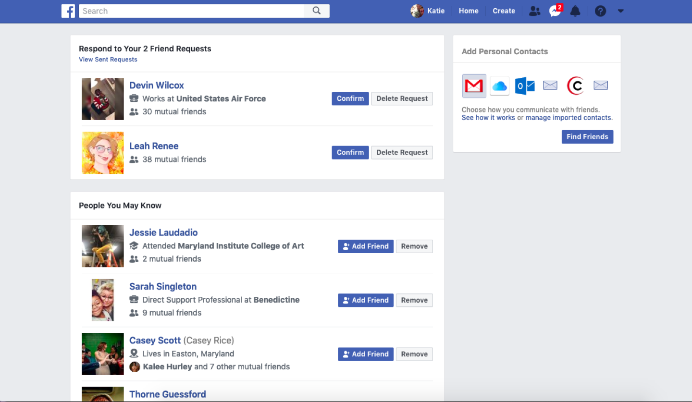
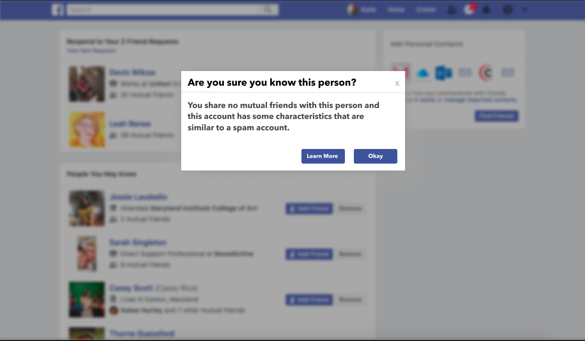
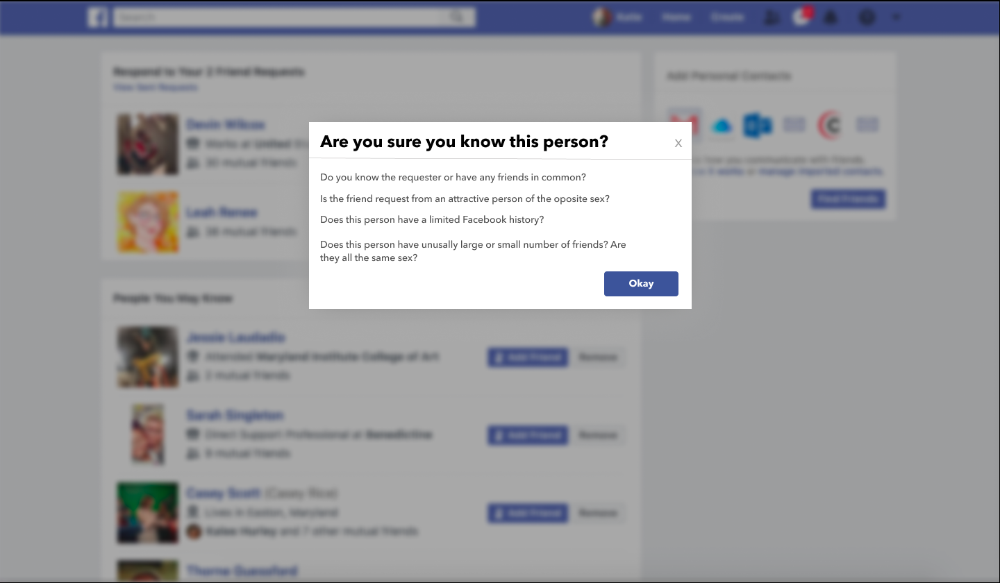

After the interview process, creating personas, crafting journeys, and compiling accessibility resources, I began prototyping solutions. These prototypes address the specific issues faced by my user personas.
Fake Friend was developed in response to Robert's persona, where he expressed his feelings about his bot experience. I began to think about how Facebook could intervene and inform its users about bots or “fake friends”. I drew inspiration from LinkedIn's shared connections and came up with this interface to both warn and educate users.
  When creating the educational pop-up screen, I first researched types of spam accounts and what warning signs they possessed. My next step was to think about the tone and language that I would be using. How would I fit it into the existing tone that Facebook has created while making it understandable for the age demographic that I am targeting? I decided to present the information as a series of questions that the user could ask themselves before accepting or deleting the friend request.